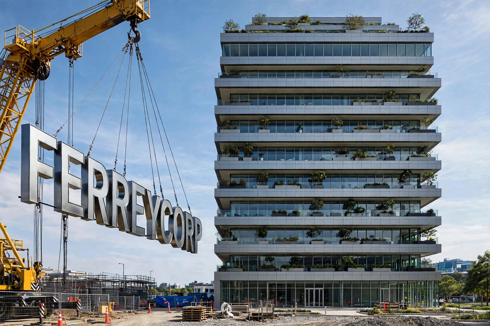

FERREYCORP
·
EL EDIFICIO
Haz clic en un piso para entrar a su capítulo

10
· Conducta resiliente
09
· Reflexión individual
08
· Conclusiones
07
· Análisis crítico
06
· Mejoras M1–M7
05
· Control
04
· Dirección
03
· Organización
02
· Planeación
01
· Apertura
01
Apertura
02
Planeación
03
Organización
04
Dirección
05
Control
06
Mejoras M1–M7
07
Análisis crítico
08
Conclusiones
09
Reflexión individual
10
Conducta resiliente